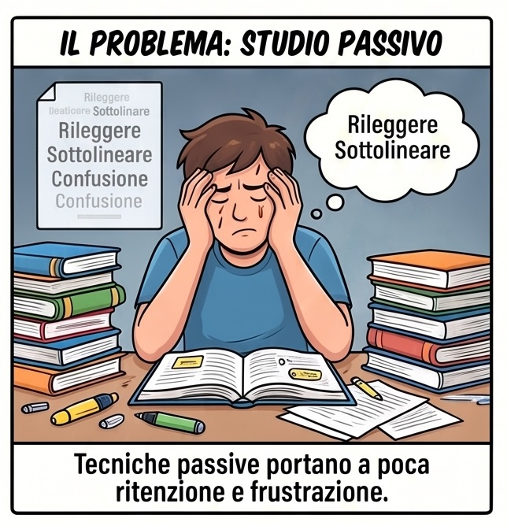
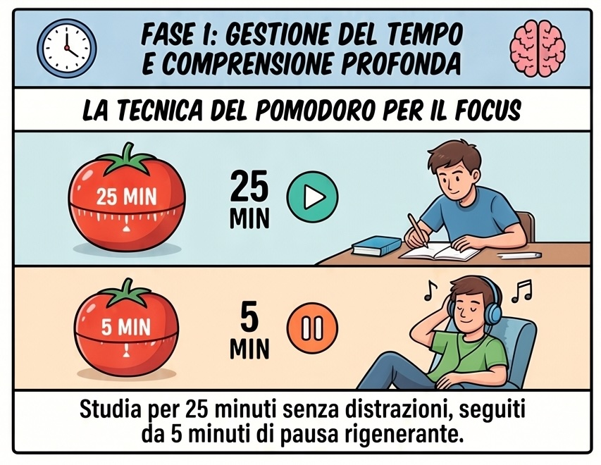
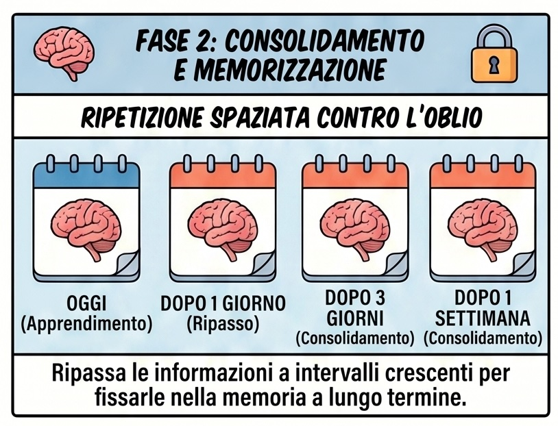
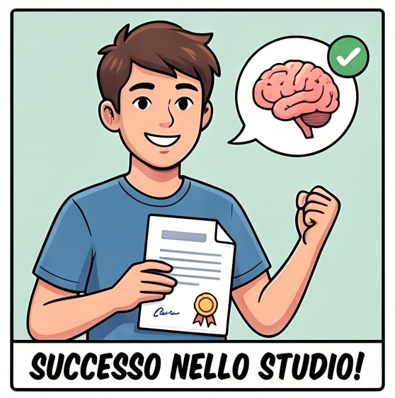

Rileggere e sottolineare: la trappola numero uno
Passi il pomeriggio a rileggere il capitolo e a sottolineare mezza pagina. Alla fine chiudi il libro con la sensazione di aver studiato… ma il giorno dopo, all'interrogazione, non ti viene niente. Perché?
Perché rileggere è uno studio passivo: le parole ti suonano familiari e il cervello le scambia per parole che sai davvero. È un inganno comodo ma inutile.
Esiste un modo per studiare meno ore e ricordare di più? Sì — anzi, ne esistono nove. Cominciamo.

Qual è il tuo problema con lo studio?
Tocca la frase che ti somiglia di più: ti accendo i metodi che fanno al caso tuo.
Gestire il tempo e capire davvero

Fissare le cose nella memoria


Adesso scegli. E parti da poco.
Nessuno usa tutti e nove i metodi insieme: sarebbe come allenare dieci sport nello stesso giorno. Scegline due e provali per una settimana intera, poi torna qui e cambia un pezzo.